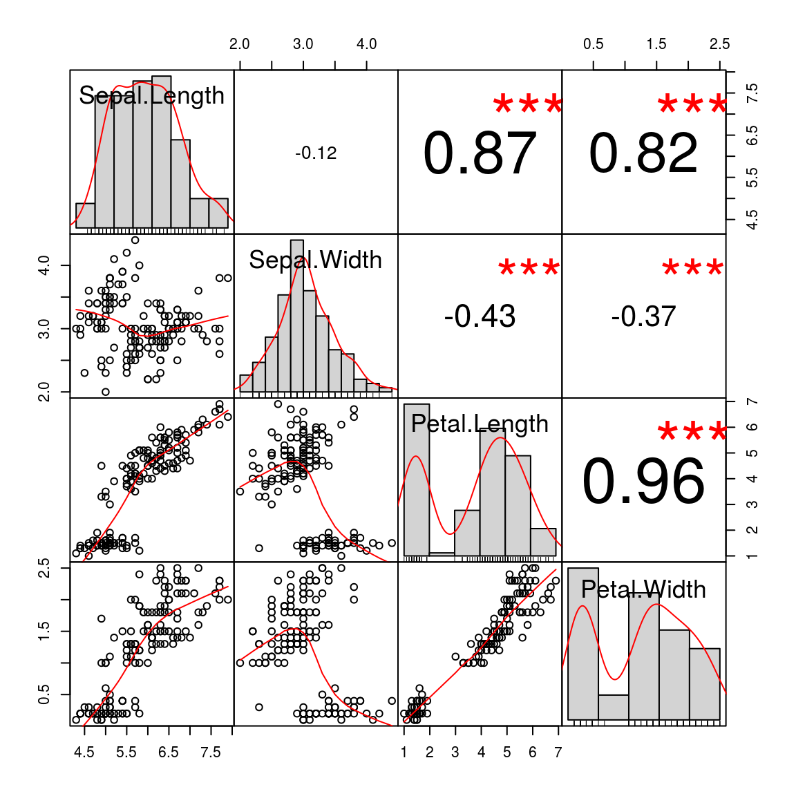
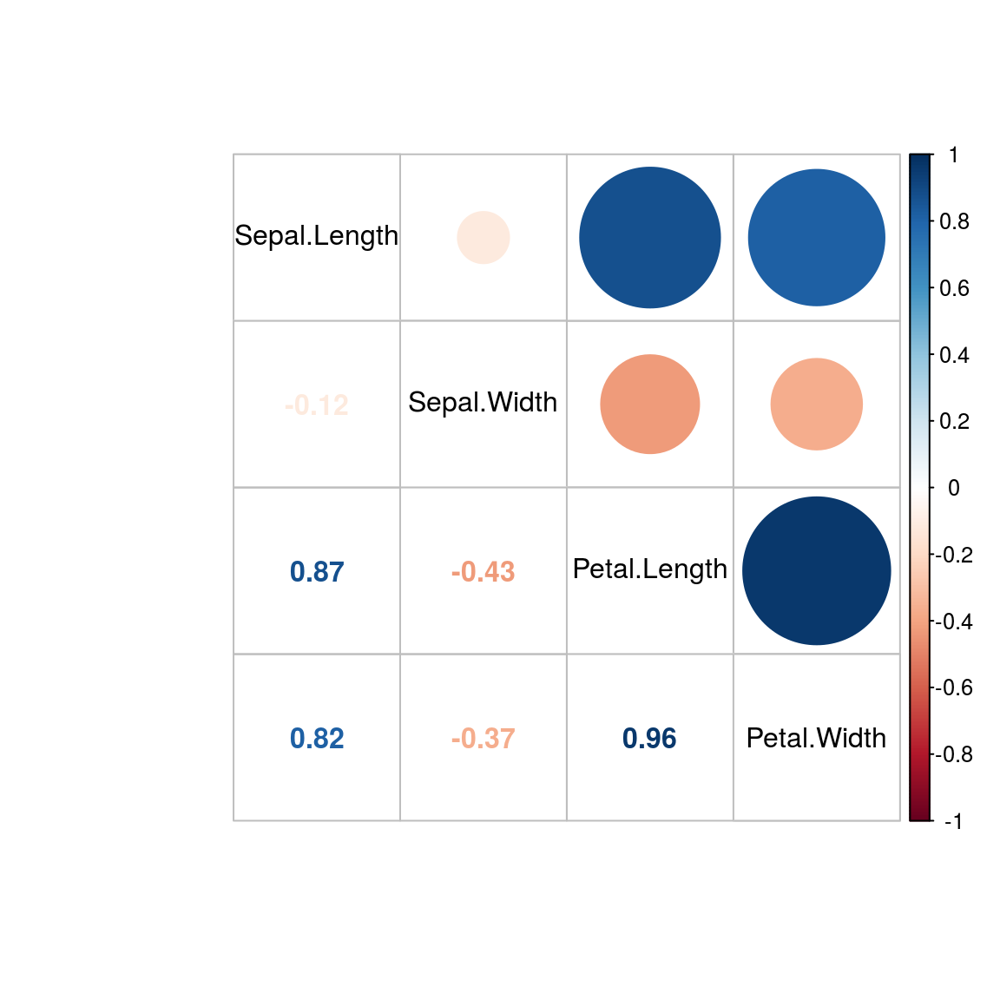

3 Correlation
3.1 Visulization of pair-wise correlation in R
3.2 Correlation and p-values of all combinations of all rows of two matrices
3.2.1 Prepare the data
bac1 <- c(1,2,3,4,5)
bac2 <- c(2,3,4,5,1)
bac3 <- c(4,5,1,2,3)
bac4 <- c(5,1,2,3,4)
bac <- as.data.frame(cbind(bac1, bac2, bac3, bac4 ))
colnames(bac) <- c("station1", "station2", "station3", "station4")
rownames(bac) <- c("bac1", "bac2", "bac3", "bac4", "bac5")
fac1 <- c(1,2,3,4,5,6)
fac2 <- c(2,3,4,5,1,6)
fac3<- c(3,4,5,1,2,1)
fac4<- c(4,5,1,2,3, 6)
fac <- as.data.frame(cbind(fac1, fac2, fac3, fac4))
colnames(fac) <- c("station1", "station2", "station3", "station4")
rownames(fac) <- c("fac1", "fac2", "fac3", "fac4", "fac5", "fac6")
bac## station1 station2 station3 station4
## bac1 1 2 4 5
## bac2 2 3 5 1
## bac3 3 4 1 2
## bac4 4 5 2 3
## bac5 5 1 3 4fac## station1 station2 station3 station4
## fac1 1 2 3 4
## fac2 2 3 4 5
## fac3 3 4 5 1
## fac4 4 5 1 2
## fac5 5 1 2 3
## fac6 6 6 1 63.2.2 Another way to do this is to use corr.test
You can just pass the full matrices to the cor function (or psych::corr.test)and it takes care of finding the correlation of the relevant columns.
#install.packages("psych")
library(reshape2)
#cor.eff<-cor(t(fac), t(bac))
#coreff <- reshape2::melt(cor.eff)
pval <- psych::corr.test(t(fac), t(bac), adjust="fdr")
pval## Call:psych::corr.test(x = t(fac), y = t(bac), adjust = "fdr")
## Correlation matrix
## bac1 bac2 bac3 bac4 bac5
## fac1 0.99 -0.08 -0.60 -0.60 -0.08
## fac2 0.99 -0.08 -0.60 -0.60 -0.08
## fac3 -0.32 0.94 -0.08 -0.08 -0.49
## fac4 -0.80 -0.32 0.99 0.99 -0.32
## fac5 -0.32 -0.49 -0.08 -0.08 0.94
## fac6 -0.37 -0.88 0.77 0.77 0.10
## Sample Size
## [1] 4
## Probability values adjusted for multiple tests.
## bac1 bac2 bac3 bac4 bac5
## fac1 0.08 0.92 0.86 0.86 0.92
## fac2 0.08 0.92 0.86 0.86 0.92
## fac3 0.92 0.29 0.92 0.92 0.92
## fac4 0.68 0.92 0.08 0.08 0.92
## fac5 0.92 0.92 0.92 0.92 0.29
## fac6 0.92 0.52 0.68 0.68 0.92
##
## To see confidence intervals of the correlations, print with the short=FALSE optioncor_pval<- merge(melt(pval$r, value.name="cor"), melt(pval$p, value.name="p-value"), by=c("Var1", "Var2"))
head(cor_pval)## Var1 Var2 cor p-value
## 1 fac1 bac1 0.98994949 0.0753788
## 2 fac1 bac2 -0.07559289 0.9244071
## 3 fac1 bac3 -0.60000000 0.8571429
## 4 fac1 bac4 -0.60000000 0.8571429
## 5 fac1 bac5 -0.07559289 0.9244071
## 6 fac2 bac1 0.98994949 0.07537883.2.3 Read data
data/cor_data_metablomics.txt
data/cor_data_transcriptome.txt
3.2.4 Calculate the correlation (Advance)
tbac <- data.frame(t(bac))
tfac <- data.frame(t(fac))
f <- function (x, y) cor(x, y)
pval <- function(x, y) cor.test(x, y)$p.val
tab <- outer(tfac, tbac, Vectorize(f))
tabp<-outer(tfac, tbac, Vectorize(pval))
as.data.frame.table(tabp)## Var1 Var2 Freq
## 1 fac1 bac1 0.01005051
## 2 fac2 bac1 0.01005051
## 3 fac3 bac1 0.67928651
## 4 fac4 bac1 0.20000000
## 5 fac5 bac1 0.67928651
## 6 fac6 bac1 0.63485163
## 7 fac1 bac2 0.92440711
## 8 fac2 bac2 0.92440711
## 9 fac3 bac2 0.05714286
## 10 fac4 bac2 0.67928651
## 11 fac5 bac2 0.51428571
## 12 fac6 bac2 0.12168993
## 13 fac1 bac3 0.40000000
## 14 fac2 bac3 0.40000000
## 15 fac3 bac3 0.92440711
## 16 fac4 bac3 0.01005051
## 17 fac5 bac3 0.92440711
## 18 fac6 bac3 0.22540333
## 19 fac1 bac4 0.40000000
## 20 fac2 bac4 0.40000000
## 21 fac3 bac4 0.92440711
## 22 fac4 bac4 0.01005051
## 23 fac5 bac4 0.92440711
## 24 fac6 bac4 0.22540333
## 25 fac1 bac5 0.92440711
## 26 fac2 bac5 0.92440711
## 27 fac3 bac5 0.51428571
## 28 fac4 bac5 0.67928651
## 29 fac5 bac5 0.05714286
## 30 fac6 bac5 0.902409993.2.5 Reference
Correlation/p values of all combinations of all rows of two matrices: https://stackoverflow.com/questions/41793219/correlation-p-values-of-all-combinations-of-all-rows-of-two-matrices
3.3 Different ways to visulize correlation
3.3.1 Display correlation using chart.Correlation in PerformanceAnalytics
library(datasets)
data(iris)
library("PerformanceAnalytics")## Loading required package: xts## Loading required package: zoo##
## Attaching package: 'zoo'## The following objects are masked from 'package:base':
##
## as.Date, as.Date.numeric##
## Attaching package: 'PerformanceAnalytics'## The following object is masked from 'package:graphics':
##
## legendchart.Correlation(iris[, 1:4], histogram=TRUE, pch=19)
library(corrplot)## corrplot 0.84 loadedcorrplot.mixed(cor(iris[, 1:4]), order="original", tl.col="black")
3.4 Reference
Seven Easy Graphs to Visualize Correlation Matrices in R: http://jamesmarquezportfolio.com/correlation_matrices_in_r.html
Example 9.17: (much) better pairs plots: https://www.r-bloggers.com/example-9-17-much-better-pairs-plots/
Introduction to Correlation: https://rpubs.com/aaronsc32/linear-relationship-pearson-r-correlation
Spearman Rank Correlation: https://rstudio-pubs-static.s3.amazonaws.com/191093_4169c5282eb145a491a5b1924941a6ba.html